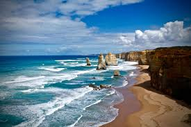

Working with Images
Simla

Goa (Konkani pronunciation: [ɡõːj], Portuguese: [ˈɡoɐ] ⓘ) is a state on the southwestern coast of India within the Konkan region, geographically separated from the Deccan highlands by the Western Ghats.[7][8] It is bound by the Indian states of Maharashtra to the north, and Karnataka to the east and south, with the Arabian Sea in the west. It is India's smallest state by area and fourth-smallest by population.
Goa

Shimla also known as Simla, is the capital and the largest city of the northern Indian state of Himachal Pradesh. In 1864, Shimla was declared as the summer capital of British India. After independence, the city became the capital of East Punjab and was later made the capital city of Himachal Pradesh. It is the principal commercial, cultural and educational centre of the state.
p>
Australia

Australia, officially the Commonwealth of Australia,[15] is a sovereign country comprising the mainland of the Australian continent, the island of Tasmania, and numerous smaller islands.[b] Australia is the largest country by area in Oceania and the world's sixth-largest country.
London

London is the capital and largest city of England, and the United Kingdom, with a population of around 8.8 million,[1] and the largest city in Western Europe by metropolitan area, with a population of 14.8 million.[9][note 1] It stands on the River Thames in south-east England at the head of a 50-mile (80 km) estuary down to the North Sea and has been a major settlement for nearly two millennia.